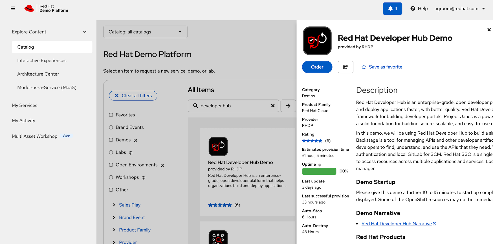

Developer hub environment
Setup Environment
This lab is based around the Developer Hub Demo available as a workshop in RHDP.

Deploy this lab and then start at the first page of these instructions.
Enable multiple instances by first Enable workshop user interface and then selecting a number of users.
Note that each user gets a 3 node cluster and this will take time to deploy.
Problems
Check you users' environment
Before running this lab it is worth checking that the end users (both at home and office based) can access our web based servers using Secure Web Sockets. This is needed for Dev Spaces and the OpenShift Web console. We see problems with locked down laptops that route all network traffic through a VPN or web proxy.
Use this test URL and make sure are checks are green on all end user systems (in all possible locations) before proceeding This test is not completely conclusive, but if it fails you have a problem: Secure Web Socket Test
A common mitigation to this problem is to ask users to use their own personal equipment, or their kids or their spouse’s etc. Rarely have we managed to get a network team to fix the corporate VPN, Proxy, Firewall etc. for a lab.
Clean up
To cleanup a cluster back to its original state there are several tasks to perform:
-
Delete my-quarkus-app and my-quarks-app-gitops repos from GitLab
-
Unregister the Catalog entry for my-quarkus-app from RHDH
-
Remove the ArgoCD applications, eg bootstrap, build, and the 3 deployments for prod, pre-prod
-
Remove the Quay repository for quayadmin/my-quarkus-app
-
Delete all the OpenShift projects related to my-quarkus-app, dev, prod and pre-prod. This should clean all pipelines and cached images